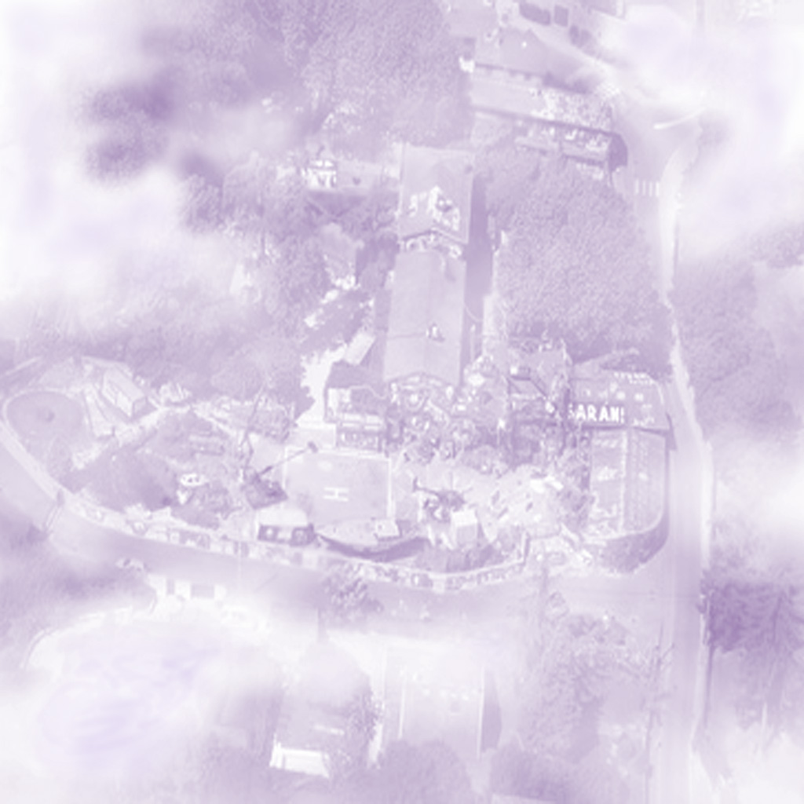

Hidden beyond a veil of purple mist lies an island that appears on no ordinary map. Its quiet town and winding paths seem untouched by time. Some believe Captain Anja created the island with a forbidden spell, hiding her magical treasures within its shores. Others say the mist is all that remains of her final enchantment. With the captain missing, one question remains: does the mist protect her secrets—or keep something from escaping?
